flowchart LR A[Raw Dataset] --> B[Connect Data] B --> C[Explore Fields] C --> D[Build Visualizations] D --> E[Create Dashboard] E --> F[Share Insights]
Tableau Session 01: Introduction to Tableau
WORKBOOKS
DATA TYPES
FIELDS
BASIC CHARTS
FILTERING
Learning Goals
- Understand the role of Tableau in data analysis and business intelligence
- Connect Tableau to Excel datasets
- Understand Tableau products and file types
- Navigate the Tableau interface
- Understand Tableau data concepts including data types, dimensions, measures, discrete and continuous fields
- Create basic visualizations using the Airbnb dataset
- Add interactivity using filters, groups, sets, and sorting
- Build and publish a simple Tableau dashboard
Overview
This session introduces the foundations of Tableau, a leading platform for interactive data visualization and business intelligence.
You will learn how Tableau connects to data, how the interface is organized, and how data fields are transformed into visualizations.
Throughout this session we will use the dataset:
Dataset: airbnb.xlsx
The dataset contains Airbnb listings with fields such as:
- Listing name
- Neighborhood
- Property type
- Room type
- Number of beds
- Price
- Number of reviews
- Host start date
Why Data Visualization Matters
Data visualization helps transform raw data into insights that humans can quickly understand.
Instead of analyzing tables of numbers, visualizations allow analysts to:
- Identify trends
- Compare categories
- Detect anomalies
- Communicate insights clearly
Visualization is therefore a critical step in data-driven decision making.
Tableau in Data Analysis
Tableau is a data visualization platform used to explore data and build interactive dashboards.
Instead of writing complex queries, analysts interact with data using drag-and-drop fields.
Typical Tableau workflow:
Downloading Tableau Desktop
Tableau Desktop can now be downloaded for free for learning and development purposes.
The desktop application provides the full authoring environment used to build visualizations, dashboards, and data analysis workflows.
Download Link
Installation Steps
- Download the installer from the official Tableau website
- Install Tableau Desktop on your computer
- Launch the application
- Sign in with a Tableau account if prompted
Publishing Dashboards
Once visualizations and dashboards are created in Tableau Desktop, they can be published online using Tableau Public.
Tableau Pablic Link
Tableau Public is a free platform that allows users to share interactive dashboards on the web.
To publish a dashboard:
- Create a Tableau Public account
- In Tableau Desktop select:
File → Save to Tableau Public- Sign in to your Tableau Public account
- The workbook will be uploaded and made publicly accessible
After publishing, dashboards can be:
- Shared through a public URL
- Embedded in websites
- Viewed and interacted with directly in a browser
Tableau Public is commonly used for:
- Portfolio projects
- Data storytelling
- Public data analysis
- Sharing visualizations with the community
Tableau Products
Tableau includes several products that support different stages of analytics.
| Product | Description |
|---|---|
| Tableau Desktop | Tool for creating dashboards and visualizations |
| Tableau Server | Platform for sharing dashboards within organizations |
| Tableau Cloud | Cloud-hosted version of Tableau Server |
| Tableau Public | Free platform for publishing dashboards publicly |
| Tableau Prep | Tool for data cleaning and preparation |
Tip
Tableau Desktop is now free, making it easier for analysts and students to learn Tableau.
Tableau File Types
| File Type | Extension | Description |
|---|---|---|
| Workbook | .twb |
Stores visualizations and connections without data |
| Packaged Workbook | .twbx |
Workbook containing embedded data |
| Data Source | .tds |
Connection metadata |
| Packaged Data Source | .tdsx |
Data source with extract |
| Extract | .hyper |
Optimized local data storage |
Tableau Interface Overview
The Tableau workspace contains several key components that help analysts explore data, build visualizations, and organize dashboards.
Each labeled section in the interface represents a group of tools used during the visualization process.
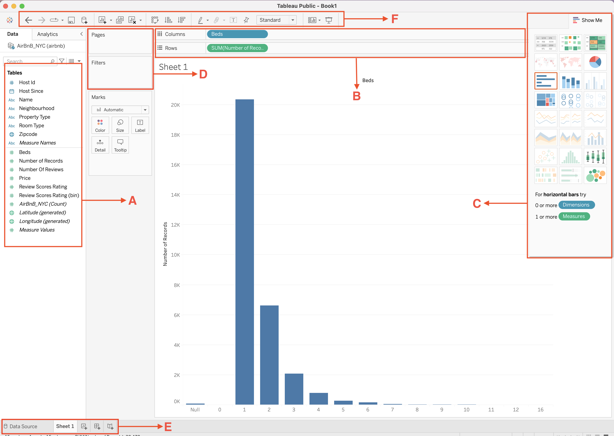
| Label | Section | Description |
|---|---|---|
| A | Data Pane | Displays all available fields from the connected dataset. |
| B | Columns and Rows Shelves | Control how fields are arranged to build the visualization. |
| C | Show Me Panel | Suggests visualization types based on selected fields. |
| D | Pages and Filters Area | Controls navigation through data and restricts which data appears in the view. |
| E | Worksheet Tabs | Allows creation and navigation between worksheets, dashboards, and stories. |
| F | Toolbar | Provides quick access to commonly used commands and formatting tools. |
A — Data Pane
The Data Pane contains all fields from the connected data source.
Fields are organized into several sections:
- Dimensions – categorical fields used to group data
- Measures – numerical fields used for calculations
- Measure Names / Measure Values – system fields used for multi-measure visualizations
- Generated fields – automatically created fields such as latitude and longitude
Additional tools within the Data Pane include:
- Search bar – quickly locate fields in large datasets
- Sort fields button – organize fields alphabetically or by type
- Group and hierarchy options – create logical relationships between fields
The Data Pane is the starting point for building visualizations, since fields are dragged from this area into shelves and cards.
B — Columns and Rows Shelves
The Columns and Rows shelves control the structure of the visualization.
Tools within this section include:
- Columns shelf – creates the horizontal axis of a chart
- Rows shelf – creates the vertical axis of a chart
- Field pills – represent the fields used in the visualization
- Aggregation indicators – show functions such as SUM, AVG, or COUNT applied to measures
- Drop zones – allow users to place additional fields to expand the visualization
These shelves define how data is arranged and determine the basic layout of the chart.
C — Show Me Panel
The Show Me panel provides a collection of visualization templates that Tableau can generate automatically.
Tools within this panel include icons for chart types.
When fields are selected in the Data Pane, compatible chart types become highlighted in the Show Me panel.
Selecting one of these icons automatically generates the corresponding visualization.
D — Pages, Filters, and Marks Area
This section contains tools used to control how data appears in the visualization.
Pages Shelf
- Allows the visualization to be broken into multiple views
- Enables step-by-step navigation through data categories
- Often used for time-based exploration
Filters Shelf
- Restricts which records are included in the visualization
- Supports filtering by dimension values, measures, or date ranges
- Filters can also be displayed as interactive controls on dashboards
Marks Card
The Marks card controls the visual appearance of data points.
Tools available in the Marks card include:
- Color – changes color encoding of marks
- Size – adjusts size of marks
- Label – displays values as text on marks
- Detail – adds additional granularity to the visualization
- Tooltip – customizes information shown when hovering over marks
Tooltips
Tooltips are interactive labels that appear when a user hovers over a data point in a visualization.
They provide additional context without cluttering the chart.
Key characteristics of tooltips:
- Display detailed information about a specific mark
- Automatically include fields used in the visualization
- Can be fully customized using text and dynamic fields
- Support formatting and conditional logic
Typical uses of tooltips:
- Showing exact values behind aggregated metrics
- Providing additional dimensions not visible in the chart
- Displaying calculated metrics or comparisons
- Improving user understanding without adding visual complexity
To edit tooltips:
- Open the Marks card
- Click Tooltip
- Customize the content using inserted fields and text
Tooltips are essential for making dashboards more informative and interactive while keeping visuals clean.
E — Worksheet Tabs
The bottom section of the interface contains navigation tabs used to organize analytical work.
Tools within this section include:
- Data Source tab – view and manage the connected dataset
- Worksheet tabs – individual visualizations
- New Worksheet button – create additional charts
- New Dashboard button – combine multiple worksheets into a dashboard
- New Story button – create sequential presentations of dashboards
These tabs help organize the analytical workflow inside a Tableau workbook.
F — Toolbar
The Toolbar provides quick-access buttons for common commands used while building visualizations.
Tools commonly available in the toolbar include:
- Undo / Redo – reverse or repeat previous actions
- Save – save the workbook
- Sort Ascending / Descending – reorder values in a visualization
- Swap Rows and Columns – quickly switch axes
- Text tool – add annotations or titles
- Format options – adjust visual formatting
- Presentation mode – display the visualization in full-screen format
- Pause automatic updates – temporarily stop queries while editing
These controls help analysts work more efficiently by providing shortcuts for frequent actions.
Connecting to Data Sources
Tableau supports connections to many types of data sources including:
- Excel
- CSV
- Databases
- Cloud platforms
For this session we connect to an Excel dataset.
Steps:
- Open Tableau Desktop
- Click Connect → Microsoft Excel
- Select
airbnb.xlsx
- Drag the sheet into the workspace
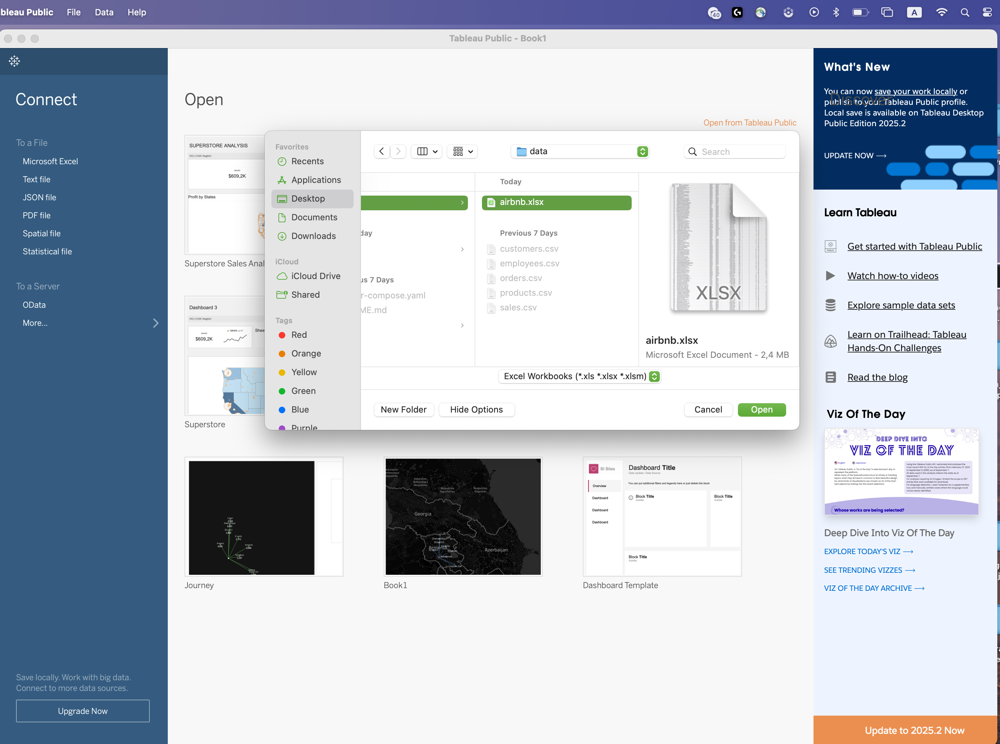
Tableau Data Model Concepts
Understanding how Tableau interprets fields is essential for building correct visualizations.
Data Types
Tableau automatically assigns data types such as:
- String (text)
- Number (whole or decimal)
- Date
- Date & Time
- Boolean
- Geographic
Example fields from the Airbnb dataset:
| Field | Data Type |
|---|---|
| Name | String |
| Neighbourhood | String |
| Price | Number |
| Beds | Number |
| Host Since | Date |
Dimensions vs Measures
When Tableau loads a dataset, it automatically divides fields into Dimensions and Measures.
Understanding this distinction is critical because it determines how data is visualized.
- Dimensions define categories
- Measures define numeric values
In simple terms:
- Dimensions answer “by what category?”
- Measures answer “how much?” or “how many?”
Dimensions
Dimensions are fields that describe qualitative attributes of the data.
They are used to segment, group, or categorize records.
Typical characteristics of dimensions:
- Often text or date fields
- Used to organize the data into categories
- Displayed as blue pills in Tableau
- Often placed on Rows, Columns, Filters, or Color
Examples from the Airbnb dataset:
| Field | Description |
|---|---|
| Name | Listing name |
| Neighbourhood | Area of the listing |
| Property Type | Apartment, house, loft |
| Room Type | Entire home, private room |
| Zipcode | Postal code |
Example visualization:
Listings by Neighborhood
Steps:
- Drag Neighbourhood → Rows
- Drag Number of Records → Columns
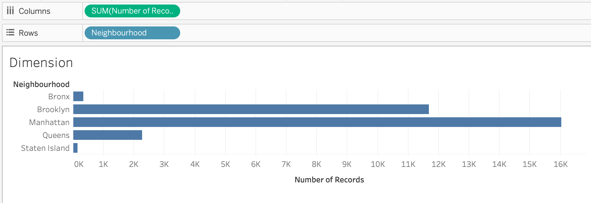
Measures
Measures represent quantitative values that can be calculated or aggregated.
Typical characteristics of measures:
- Usually numeric fields
- Aggregated automatically
- Displayed as green pills
- Create axes in charts
Examples from the Airbnb dataset:
| Field | Description |
|---|---|
| Price | Nightly listing price |
| Beds | Number of beds |
| Number Of Reviews | Total reviews |
| Review Scores Rating | Review score |
Example visualization:
Average price of listings
Steps:
- Drag Price → Columns
- Right click and choose Measure → Average
Tableau automatically calculates:
AVG(Price)
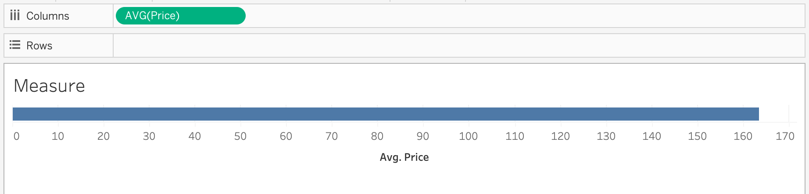
Aggregation of Measures
Measures are aggregated when used in visualizations.
Common aggregation functions include:
| Function | Purpose |
|---|---|
| SUM() | Total value |
| AVG() | Average value |
| COUNT() | Number of records |
| COUNTD() | Distinct values |
| MIN() | Minimum value |
| MAX() | Maximum value |
Using Dimensions and Measures Together
Most visualizations combine dimensions and measures.
General rule:
Dimension → organizes the data
Measure → calculates numeric valuesExample:
Average price by property type
| Property Type | Avg Price |
|---|---|
| Apartment | 150 |
| House | 180 |
| Loft | 210 |
Discrete vs Continuous Fields
Fields in Tableau can behave as discrete or continuous.
| Type | Appearance | Behavior |
|---|---|---|
| Discrete | Blue pill | Creates categories |
| Continuous | Green pill | Creates an axis |
Example:
| Field | Behavior |
|---|---|
| Property Type | Discrete |
| Price | Continuous |
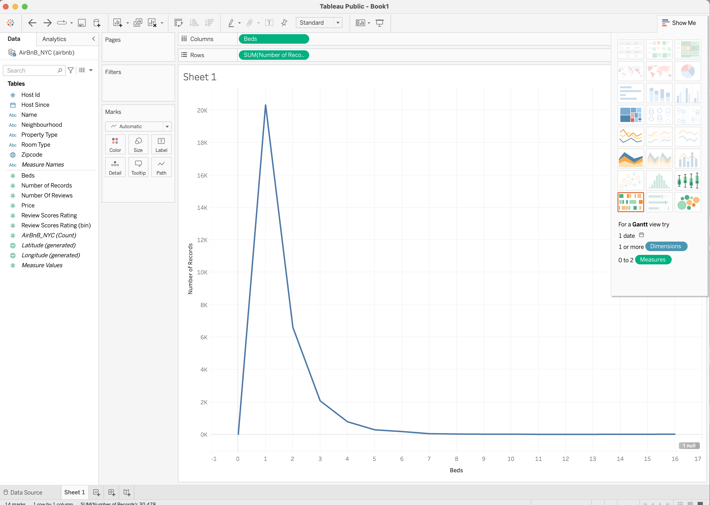 |
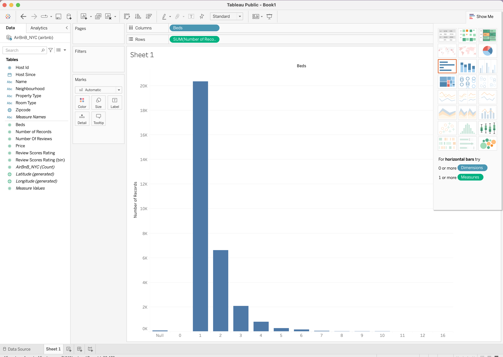 |
|---|---|
| Continuous | Discrete |
Workbook Formatting
Workbook formatting controls the visual appearance and consistency of worksheets and dashboards.
Proper formatting improves readability, usability, and professional presentation.
Key formatting areas include:
- Fonts – control text size, style, and hierarchy
- Colors – define color palettes and highlight important data
- Shading – adjust background colors of panes and headers
- Borders – add separation between elements
- Alignment – control positioning of text and labels
- Number formatting – define how values are displayed (currency, percentages, decimals)
Formatting can be applied at multiple levels:
- Worksheet level – affects a single visualization
- Dashboard level – ensures consistency across multiple charts
- Workbook level – applies global styling rules
Common best practices:
- Use consistent fonts across all sheets
- Apply a limited and meaningful color palette
- Align elements for a clean layout
- Avoid excessive gridlines and borders
- Format numbers clearly (e.g., 1K, 1M, percentages)
Formatting tools can be accessed through:
- Format menu in the Menu Bar
- Right-click options within the visualization
- Formatting pane inside Tableau
Proper workbook formatting ensures that dashboards are not only functional but also clear, consistent, and visually appealing.
Creating Basic Visualizations
Using the Airbnb dataset we can build several types of charts.
Bar Chart — Listings by Property Type
Question:
Which property is most common?
Steps:
- Drag Name → Columns
- Drag Number of Records → Rows
- Sort descending
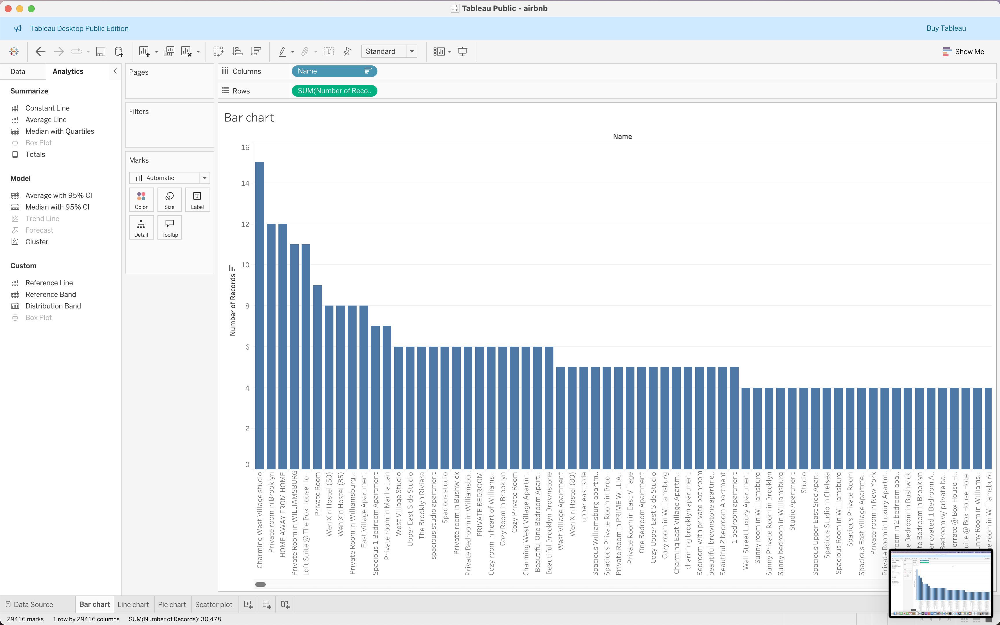
Line Chart — Listings Over Time
Question:
How did the number of hosts grow over time?
Steps:
- Drag Host Since → Columns
- Change to Month(Host Since)
- Drag Number of Records → Rows
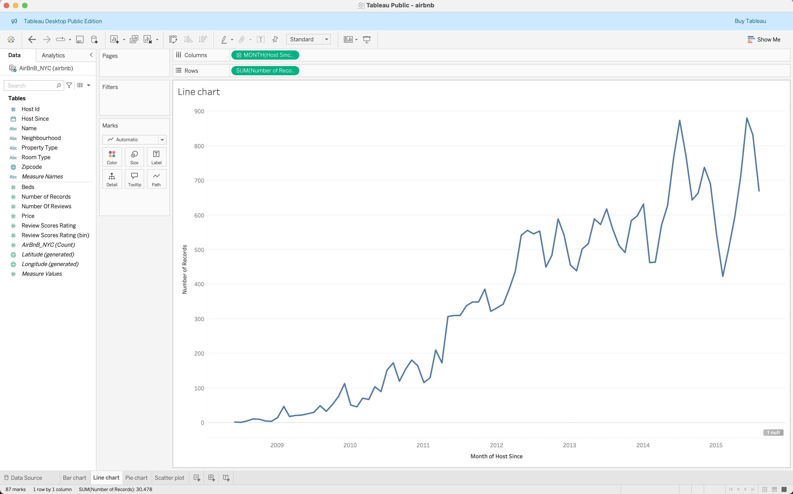
Pie Chart — Property Type Distribution
Question:
What proportion of listings are apartments?
Steps:
- Change Marks type → Pie
- Drag Property Type → Color
- Drag Number of Records → Angle
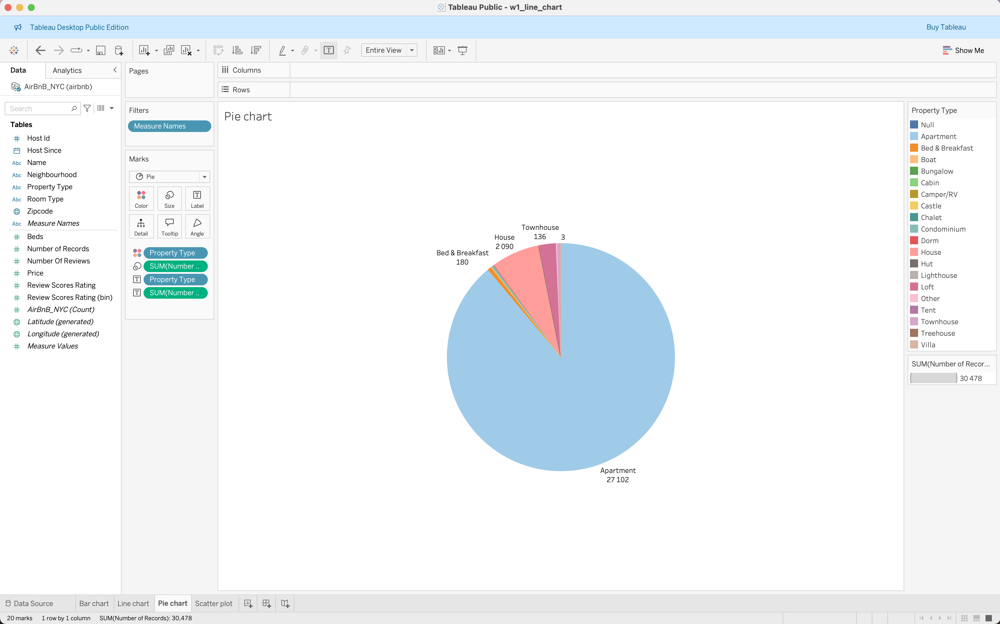
Scatter Plot — Price vs Reviews
Question:
Do more expensive listings receive more reviews?
Steps:
- Drag Price → Columns
- Drag Number Of Reviews → Rows
- Drag Property Type → Color
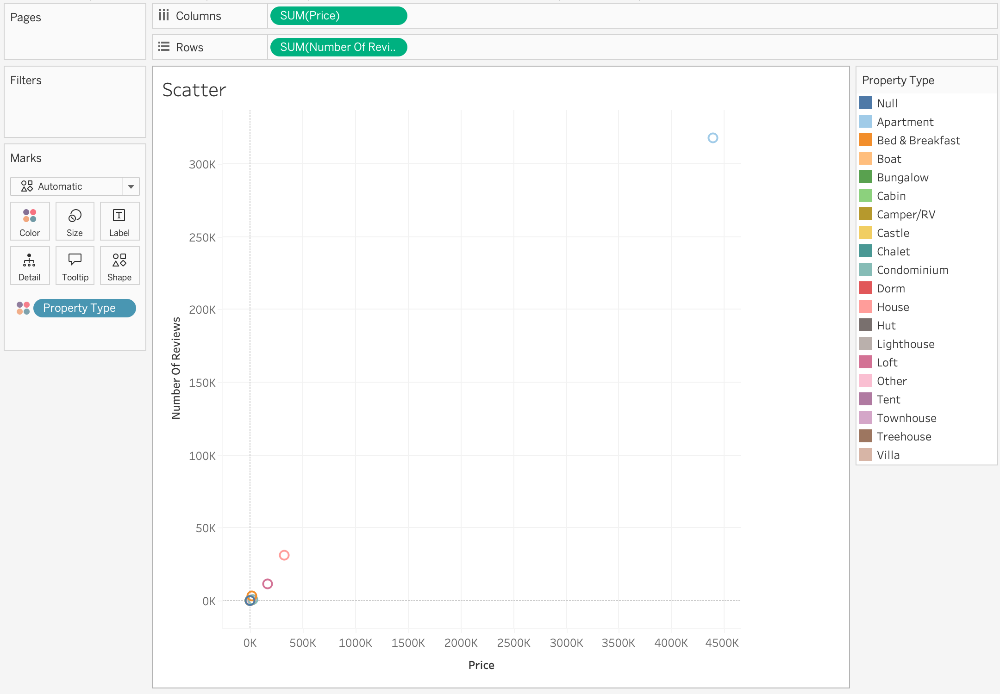
Adding Interactivity
One of the main strengths of Tableau is the ability to create interactive visualizations.
Interactivity allows users to explore data dynamically, rather than viewing static charts.
Instead of presenting a single fixed view, interactive dashboards allow users to:
- Focus on specific categories or time periods
- Drill into subsets of the data
- Highlight important segments
- Reorder and reorganize information
This makes dashboards much more useful for data exploration and decision-making.
Several Tableau features enable this interactivity.
| Feature | Purpose |
|---|---|
| Filters | Restrict data displayed |
| Groups | Combine categories |
| Sets | Define subsets |
| Sorting | Control order of values |
Filters
Filters allow analysts to restrict which data is displayed in a visualization.
They help focus analysis on specific segments of the dataset.
For example, in the Airbnb dataset, a user might want to analyze:
- Listings in a specific neighbourhood
- Listings with price above a certain threshold
- Listings from a specific year
Steps to create a filter:
- Drag a field to the Filters shelf
- Select which values to include
- Optionally show the filter on the dashboard
Example:
Filter listings by Neighbourhood
Neighbourhood = Bronx
Neighbourhood = BrooklynOnly listings from Bronx, Brooklyn will be displayed.
Filters are commonly used in dashboards to allow user-driven exploration.
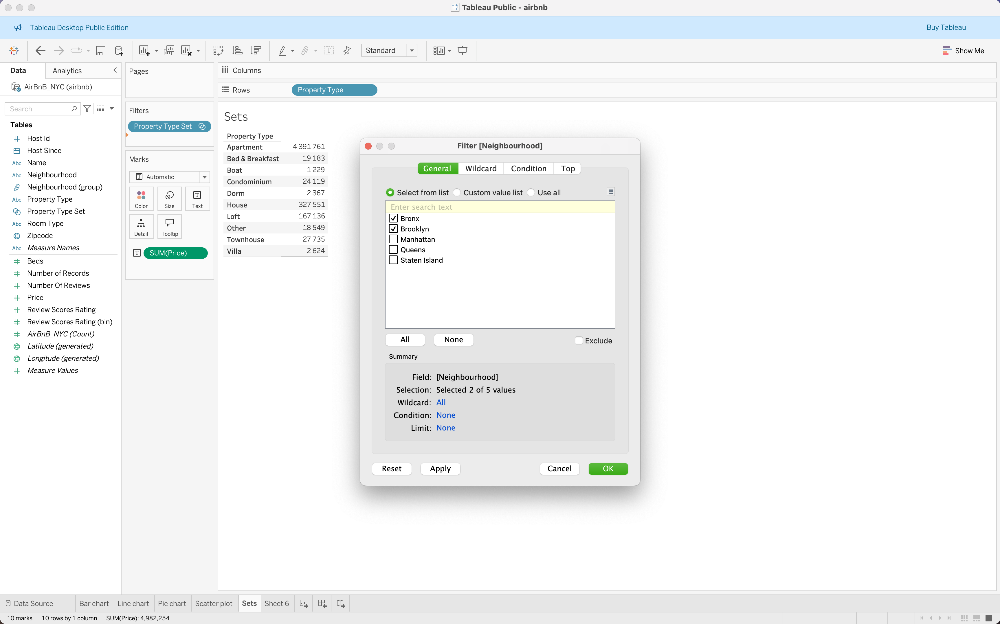
Groups
Groups allow analysts to combine multiple dimension values into a single category.
This is useful when a dataset contains many small categories that should be analyzed together.
Example from the Airbnb dataset:
Several neighbourhoods can be combined into Boroughs:
Inner Boroughs, Outer BoroughsSteps to create a group:
- Select multiple values in a dimension
- Right-click and choose Group
- Rename the group
Groups are helpful for:
- Simplifying complex datasets
- Aggregating small categories
- Creating custom classification structures
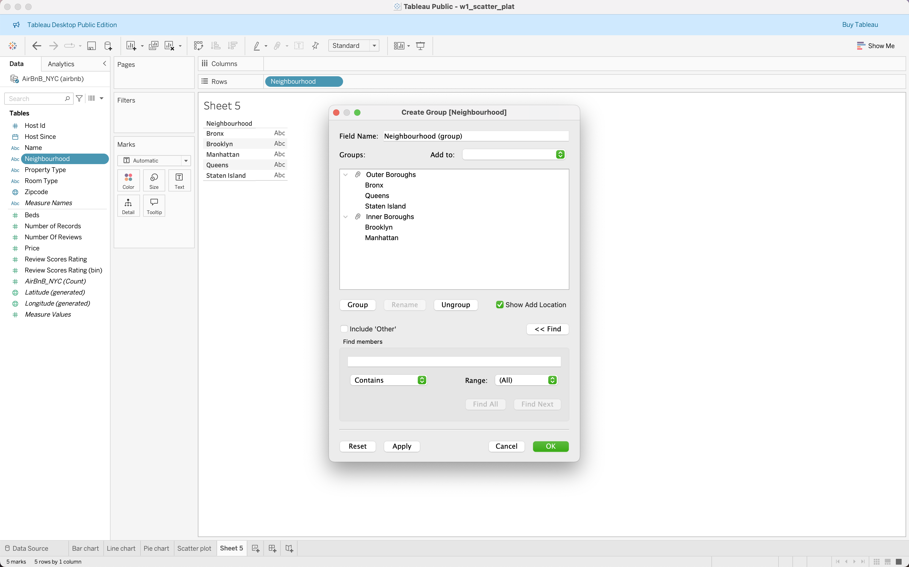
Sets
Sets define a subset of data based on rules or manual selection.
Unlike groups, sets are often dynamic and can change based on conditions.
Examples of sets include:
- Top 10 most expensive listings
- Listings with more than 100 reviews
- Top neighborhoods by average price
Sets are particularly useful for:
- Highlighting important segments
- Creating comparisons between groups
- Supporting advanced calculations
Example:
Top 10 listings by Number Of ReviewsTableau automatically calculates the subset.
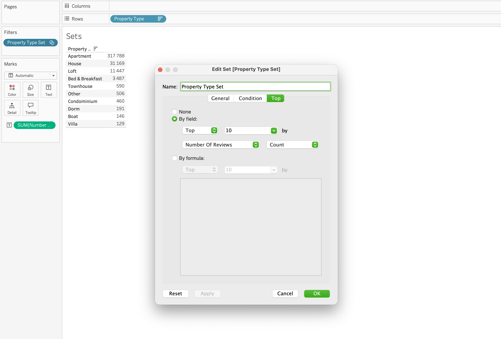
Sorting
Sorting controls the order in which categories appear in a visualization.
Sorting improves readability and helps highlight patterns.
For example:
Instead of showing property types alphabetically:
Apartment
Bed & Breakfast
BoatSorting by number of listings will show:
Apartment
House
Loftordered from highest to lowest listing count.
Sorting options include:
- Ascending
- Descending
- Sort by field value
- Manual sorting
Sorting is especially useful in:
- Bar charts
- Ranked lists
- Top-N analysis
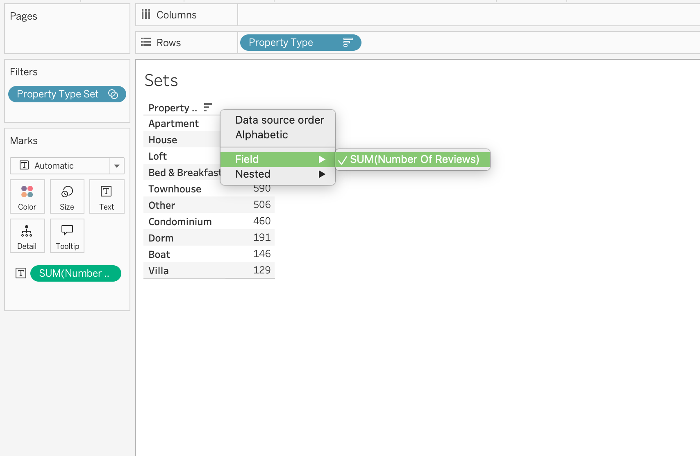
Why Interactivity Matters
Interactive dashboards allow users to move from static reporting to exploratory analysis.
Users can:
- Filter the dataset
- Focus on specific segments
- Identify trends quickly
- Explore different scenarios
This capability is one of the reasons Tableau is widely used for business intelligence and analytical dashboards.
Hands-On Task
Build a simple Tableau dashboard using the Airbnb dataset.
Steps:
- Connect to
airbnb.xlsx
- Create at least three visualizations
- Add one interactive filter
- Combine worksheets into a dashboard
- Publish to Tableau Public
Articles
- https://public.tableau.com/en-us/s/resources
- https://public.tableau.com/app/profile/glowbyte.consulting/viz/ChartChooser_15550897459460/ChartChooser
Videos 1. Introduction to Tableau for Beginners
- https://www.youtube.com/watch?v=OmNeLFmyMJQ